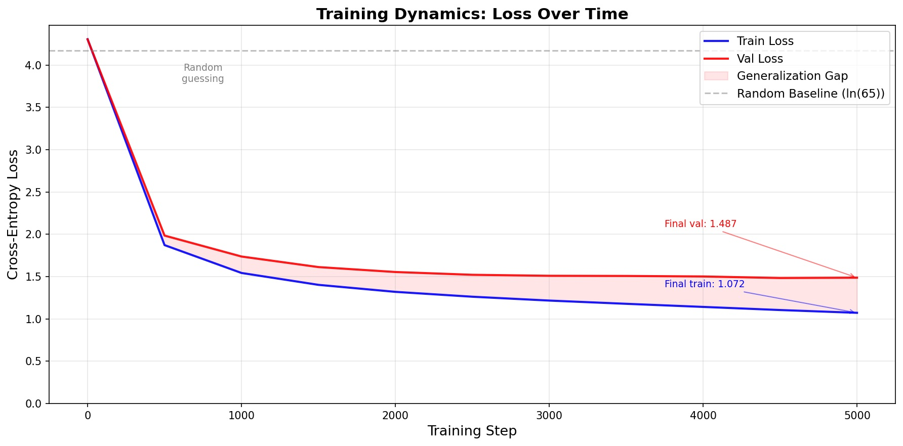
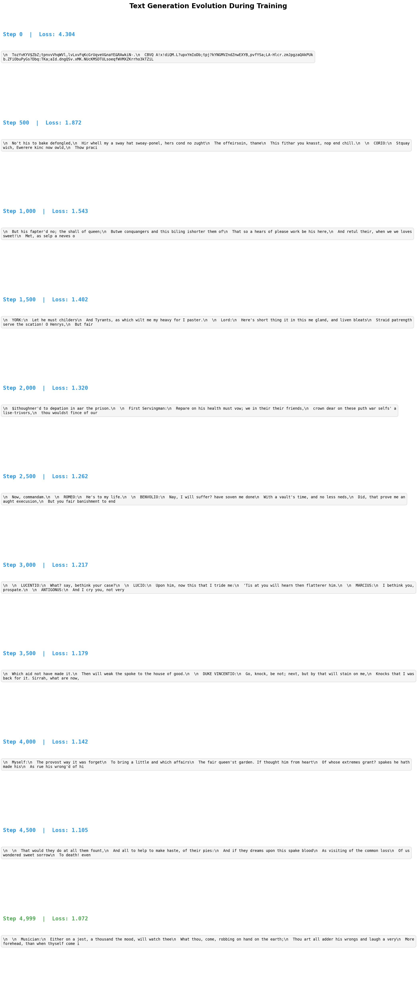
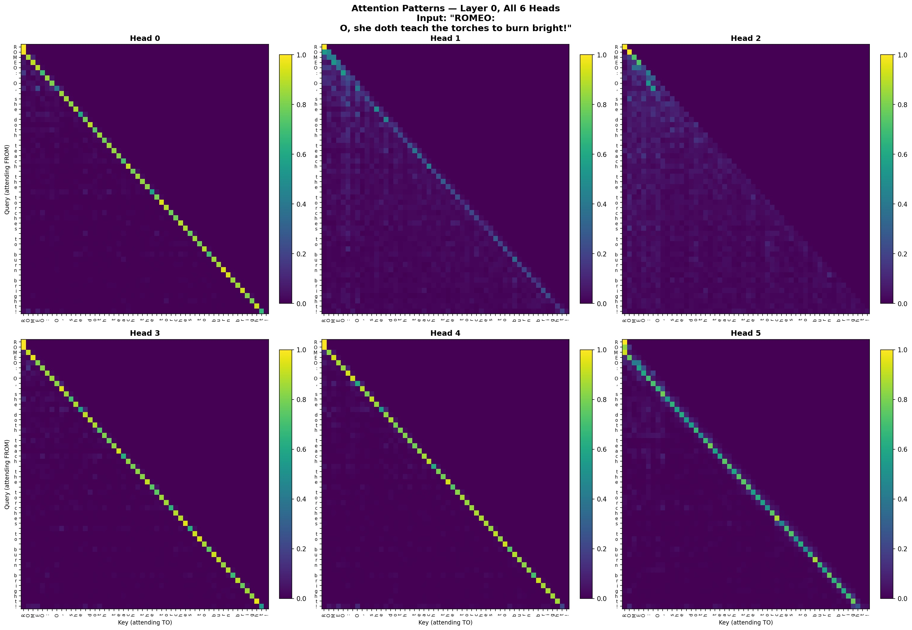
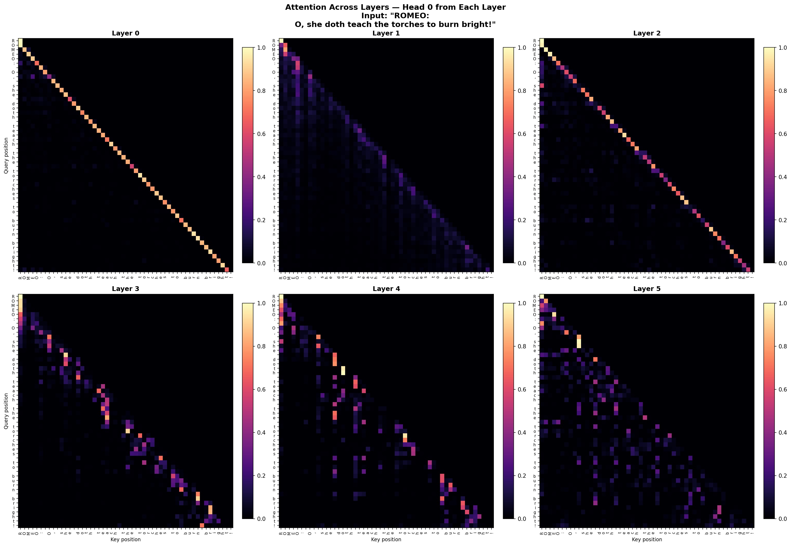
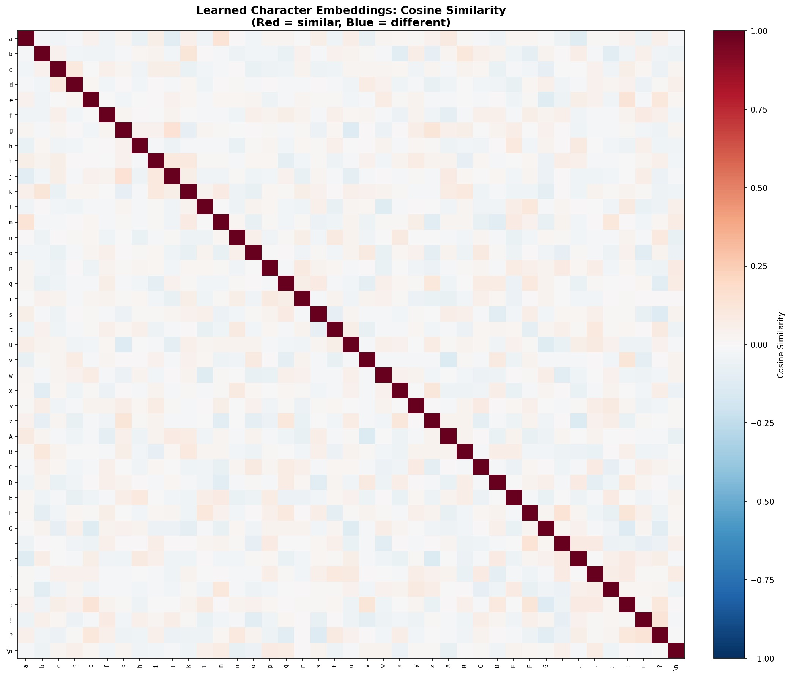
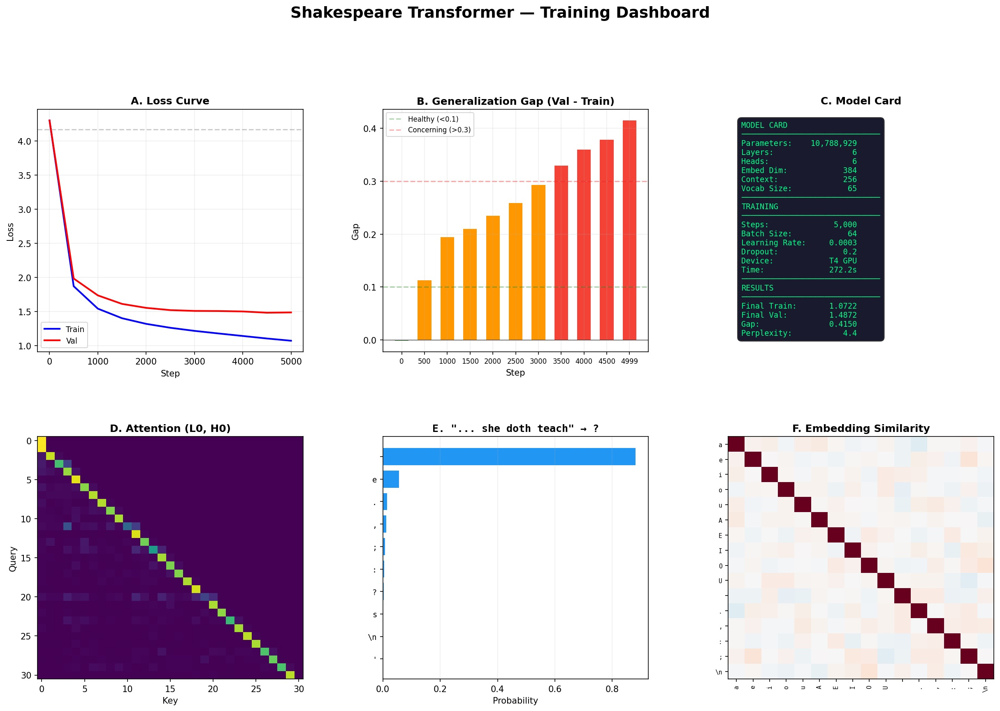

Shakespeare Transformer
10.8M parameter transformer trained from scratch on 1.1MB of Shakespeare · NVIDIA H100 · ~4 minutes
1. Loss Curve
The most important chart in ML. Shows the model learning over time — both on training data and held-out validation data.

Key insight: Loss drops from 4.3 (random guessing over 65 characters) to 1.07 train / 1.49 val. The widening gap (pink area) shows overfitting — the model is memorizing training data faster than it's generalizing. Expected for 10.8M params on only 1MB of text.
2. Text Evolution
Generated text at each training checkpoint. Watch the model go from random noise to coherent Shakespeare.

Key insight: Step 0 = gibberish. By step 500, words and spaces emerge. By step 2000+, full dialogue with character names, colons, punctuation, and Shakespearean vocabulary. The model learned English structure, then Shakespeare's style — entirely from character-level prediction.
3. Attention Heads (Layer 0)
What each of the 6 attention heads "looks at" when processing a line of Shakespeare. Each head learns a different pattern.

Key insight: The bright diagonal in Heads 0 and 4 means "look at the previous character" — the most basic pattern. Other heads show diffuse or selective attention, meaning they learned to look at broader context or specific structural elements like punctuation and speaker names.
4. Attention Across Layers
Head 0 at each of the 6 layers. Shows how attention evolves from local to abstract patterns as you go deeper.

Key insight: Early layers (0-1) have tight diagonals = local, character-level attention. Later layers (4-5) have sparse, scattered hot spots = long-range, abstract pattern matching. The model builds a hierarchy: characters → words → phrases → meaning.
5. Next-Character Predictions
For 4 famous prompts, what does the model think comes next? Shows confidence distribution over all 65 possible characters.

Key insight: "wherefore art thou R" → "o" at 98.8% confidence. "To be or not to b" → "e" at 87.7%. The model is extremely confident on well-known phrases. For "is not str" it's less sure (48.6% "a" for "strained") because multiple completions are plausible — this uncertainty is a feature, not a bug.
6. Embedding Similarity
How the model internally represents each character. Red = the model sees them as similar. Blue = different. Nobody told the model what letters are — it figured this out from context.

Key insight: Lowercase letters cluster together. Uppercase cluster together. Punctuation forms its own group. Newline (\n) is most different from everything — it uniquely signals "new speaker" in Shakespeare's dialogue. The model discovered the structure of the alphabet on its own.
7. Training Dashboard
The full story at a glance — loss curve, overfitting gap, model card, attention, predictions, and embeddings in one view.

Key insight: The generalization gap bars go green → orange → red over training, confirming overfitting. Perplexity of 4.4 means the model narrows 65 possible characters down to ~4 on average. The model card shows the full architecture: 6 layers, 6 heads, 384 embedding dim.
Architecture
6 Transformer Blocks
6 Attention Heads
384 Embed Dim
256 Context Window
65 Vocab (char-level)
AdamW Optimizer
0.2 Dropout
5000 Steps
This is the same architecture as GPT and Claude — self-attention with Q/K/V, multi-head attention, feed-forward networks, residual connections, layer normalization, and causal masking. The only difference is scale: 10.8M params vs trillions, 65-char vocab vs 100K+ tokens, 256-char context vs 128K+ tokens.